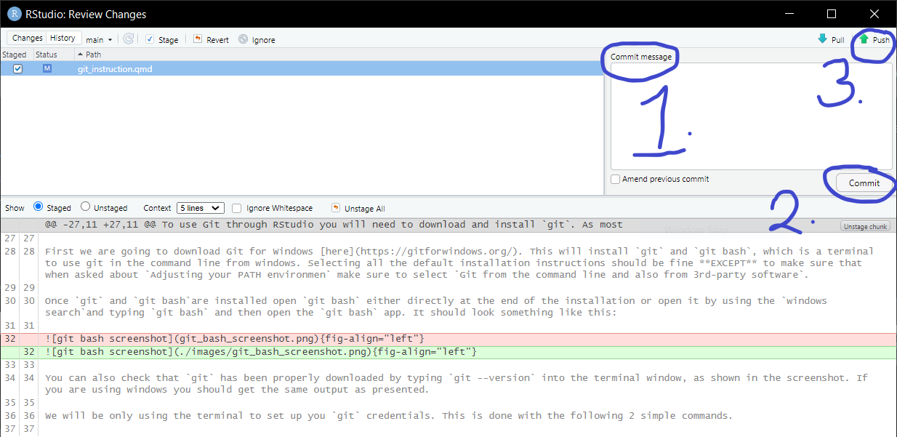

git config --global user.name "James Bond"
git config --global user.email "007@example.com"Git / GitHub Setup Instructions
This tutorial will provide instructions on setting up Git & Github and how how to integrate these into R/RStudio to use in a basic workflow. There are 4 steps in this tutorial:
- Download & install Git
- Create GitHub account
- Check if RStudio can find Git
- TEST - My first pull request
For this tutorial I have greatly simplified the nice free book Happy Git and GitHub for the UseR explaining how to setup and use Git & GitHub with R. For a more in depth explanation please consult this book.
1 Download & Install Git
To use Git through RStudio you will need to download and install git. As most of our group members have Windows laptops provided by HSG IT department I will provide instructions for this setup. For macOS you will need to consult the previously mentioned book, but good news for you it is actually a lot easier than using a Windows laptop. If you have any issue we can work through them at our in person tutorial.
First we are going to download Git for Windows here. This will install git and git bash, which is a terminal to use git in the command line from windows. Selecting all the default installation instructions should be fine EXCEPT to make sure that when asked about Adjusting your PATH environmen make sure to select Git from the command line and also from 3rd-party software.
Once git and git bashare installed open git bash either directly at the end of the installation or open it by using the windows searchand typing git bash and then open the git bash app. It should look something like this:

You can also check that git has been properly downloaded by typing git --version into the terminal window, as shown in the screenshot. If you are using windows you should get the same output as presented.
We will be only using the terminal to set up you git credentials. This is done with the following 2 simple commands.
The user.name should be your first and last name, user.email can be either your HSG or personal email. The email address you choose will need to be the same email address for your GitHub account in Step 2.
Now you have configured Git and are ready to create a GitHub account.
2 Create GitHub Account
Create a free GitHub Account. You will need to use the same email address as your git config.
To interact with the remote Git server, here Github, we need to create access credentials for such a request. This can be done via SSH or HTTPS. For ease of setup we are going to be using HTTPS, which will use a personal access token (PAT). Once you have a GitHub account you can create a PAT by using this LINK.
Add a NOTE for what this will be used for. I wrote HSG_git_tutorial that you can also use.
leave the expiration to 30 days and select the following scopes:
- repo
- workflow
- gist
- user
Then click generate token. This token will only be shown now so copy it into Notepad or another text editor and save it somewhere safe. We will now store this token explicitly so git can use it when accessing GitHub. For this we will use the gitcreds package in R.
gitcreds::gitcreds_set()Then input your token. Now it is saved and you can work with GitHub.
3 Check if RStudio can find Git
Now lets check if RStudio can find git and use everything we setup.
First restart Rstudio and go to Tools > Global Options > Git/SVN and make sure that the box Git executable points to your Git executable.
This should look something like this under Git executable:
“C:/Users/Sam.Vickery/AppData/Local/Programs/Git/bin/git.exe”
Now we know that RStudio recognizes Git and we can create projects using Git and GitHub repositories. This is what we will be doing in the next section.
4 TEST - My first pull request
We are first going to create a new project using version control (Git) and then pull the tutorial from Github to your local machine make some changes and push these back to GitHub.
In Rstudio go to File > New Project > Version Control, then you will need to add the URL for the public GitHub repo I have created for our tutorial: https://github.com/viko18/MSK_git_tutorial.git and provide a location you want the new directory to be on your local machine and click create.
Now you have a local version of the repository that we can collaborate on. The work flow for making changes is as follows:
pullrepository (repo) from server (GitHub) this will make sure you have the most recent version of the repo.Make changes -> Here we will just be making simple changes to the
README.md.Then we need to stage the changes and push them to GitHub, this is done in three steps that are also visualised in a screenshot below.
First Provide a meaningful commit message. this will be attached to your changes and should shortly explain what has been done.
Second Commit the changes. Now Git recognises that changes have been made and has attached the commit message to them.
Third Push changes made locally to the main branch on GitHub.

Now you (Hopefully) better understand how to use Git & GitHub in Rstudio using a simple workflow.